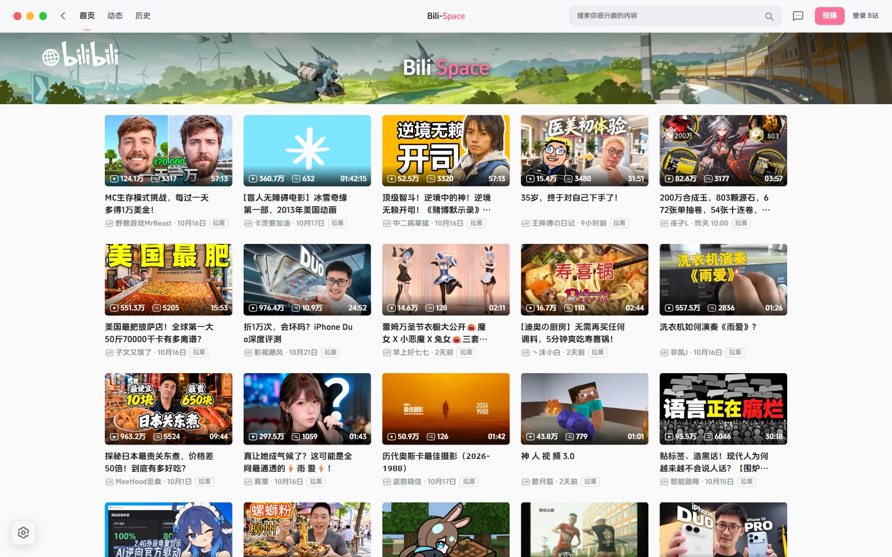
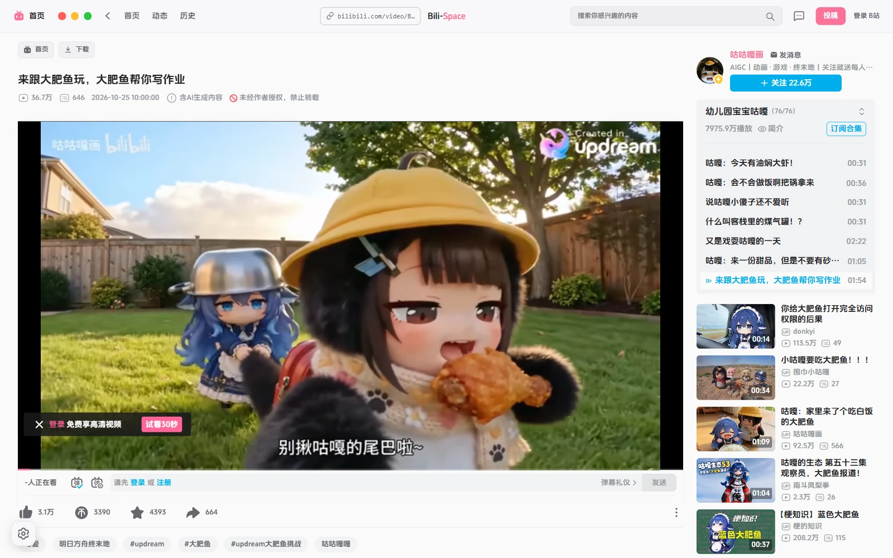
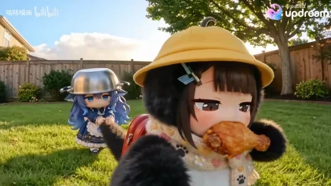
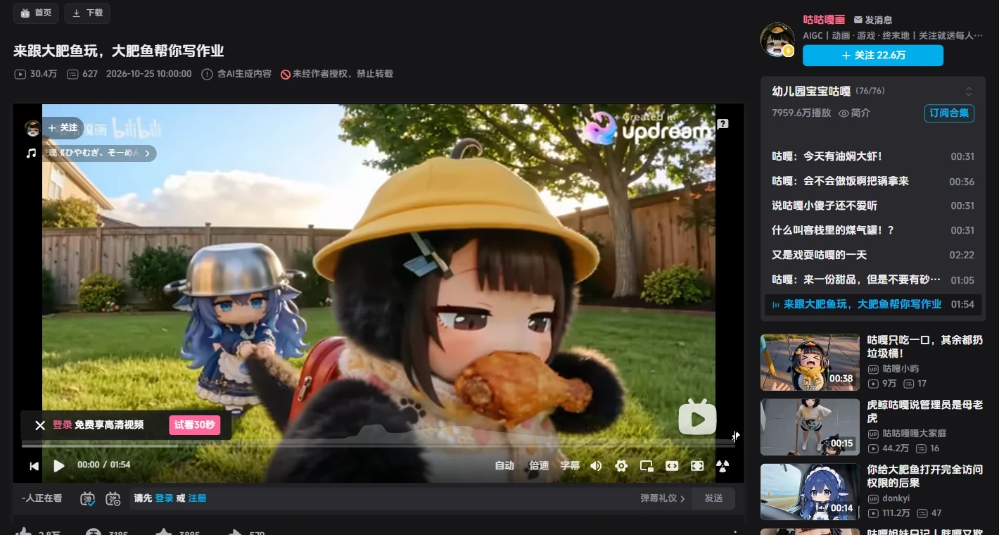
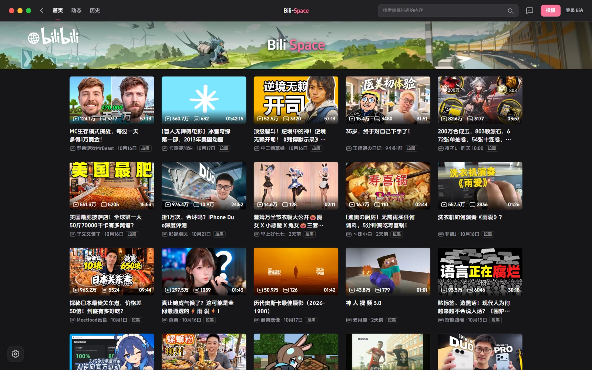

BILI-SPACE / WINDOWS
熟悉的 B 站，
更自在的空间。
你的最后一款 B 站客户端。
保留你喜欢的播放与弹幕，
把多余的打扰，留在窗口之外。
最新正式版Windows 10 / 11 · x64

少一点打扰，多一点喜欢。
原生播放与弹幕内置视频下载无边框画中画随心个性化
01 / 专注观看
画面之外，
少一点打扰。
清理首页推广和播放页广告位。
熟悉的播放器、弹幕与快捷键，
一个也不用重新适应。
换个小窗，继续喜欢。
置顶、无边框，拖到顺手的位置。
窗口变大，弹幕也跟着适配。



进度 · 速度 · 预计时间 · 随时取消
03 / 属于你的空间
习惯，不必将就。
主题、进度条、顶部栏与分区，
按你的审美和使用习惯来。

还有一些，顺手的小事
用着用着，
就回不去了。
- 最高 200% 音量
- 播放器滑条和方向键统一调节，听得清，也调得顺手。
- B站官方搜索
- 搜索历史与联想沿用官方数据，想看的更快找到。
- 托盘随叫随到
- 收起自动暂停，双击即刻回来。
- 首页一键拉黑
- 按钮就在视频卡片里，不想看到的，不必再见。